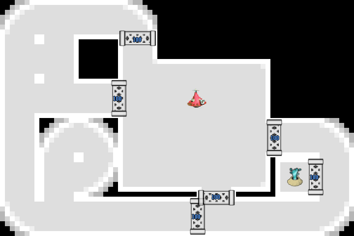
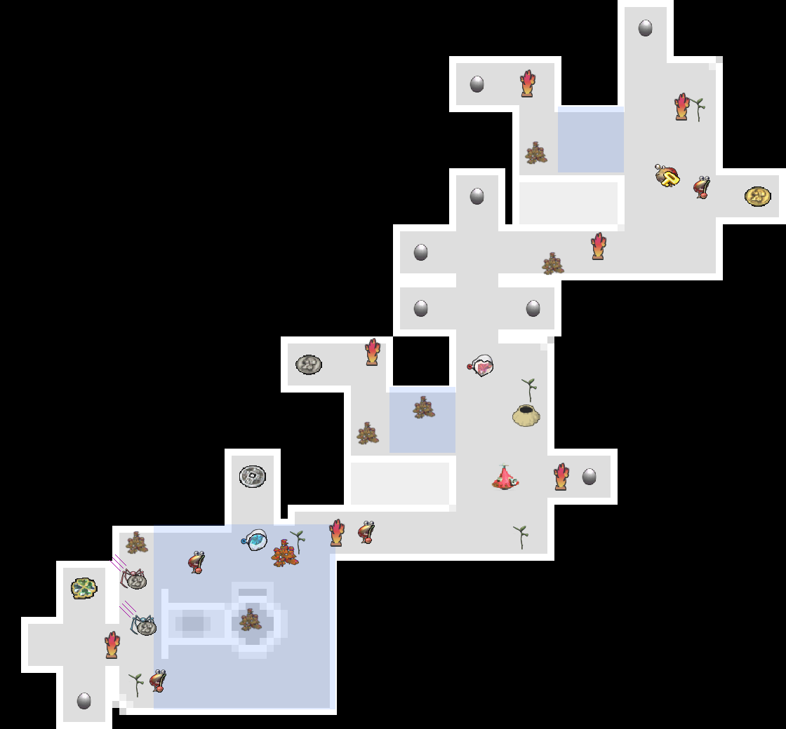
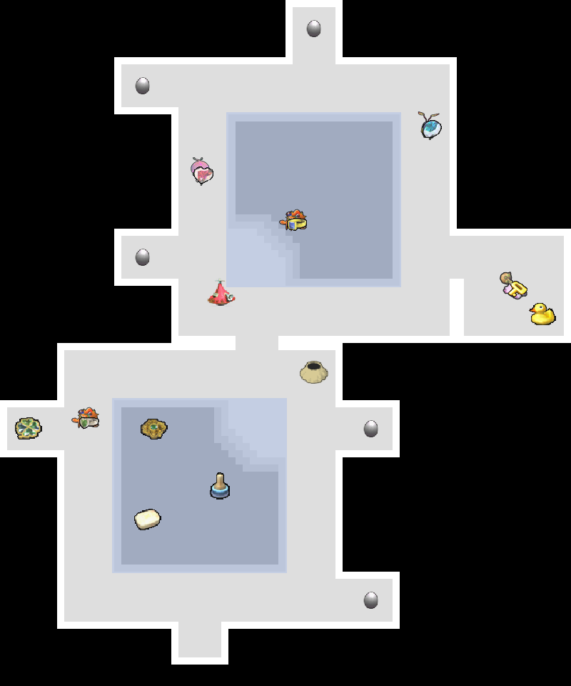
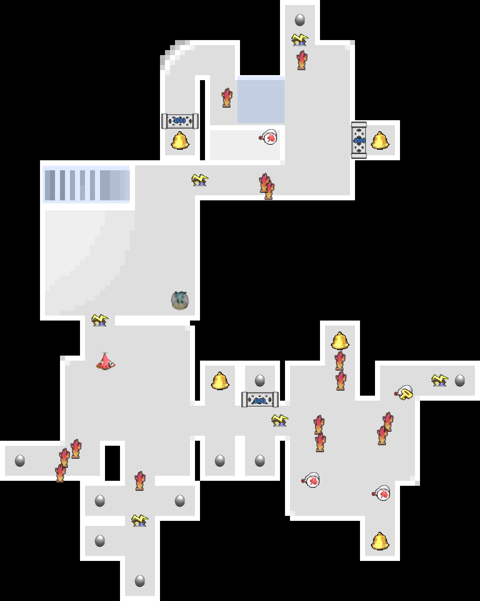
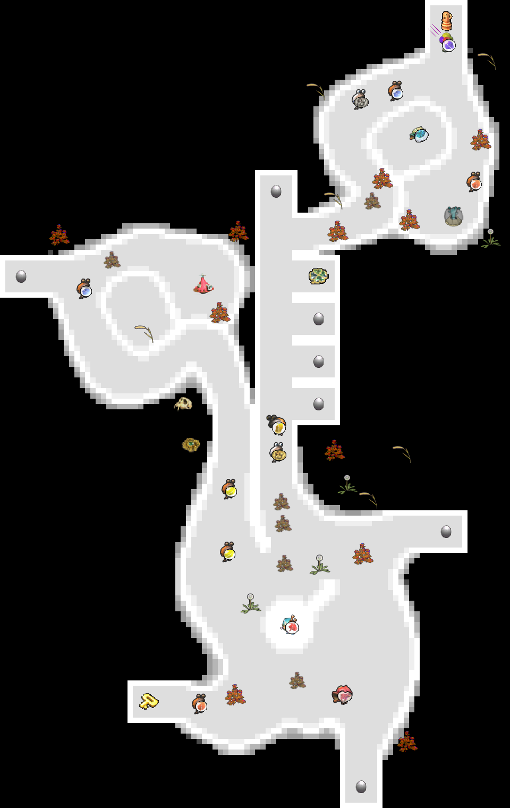

Pikmin Repository
ピクミンガチ勢向け情報まとめサイト
- 辺境の洞窟 (地下4階)
- 辺境の洞窟 (地下7階)
- 地下の秘密基地 (地下4階)
- 地下の秘密基地 (地下7階)
- デメマダラの王国 (地下4階)
- デメマダラの王国 (地下6階)
- クモの根城 (地下3階)
- クモの根城 (地下4階)
- 食神の台所 (地下3階)
- 食神の台所 (地下5階)
- シャワールーム (地下5階)
- シャワールーム (地下6階)
- シャワールーム (地下7階)
- 水中の城 (地下4階)
- 新参者の試練場 (地下2階)
- グリーンホール (地下2階)
- 鉄人の穴 (地下2階)
- 赤の洞窟
- 大足の穴
- 炎と水の試練場 (地下1階)
- 巨人のトイレ (地下1階)
- 土とんの洞窟 (地下1階)
- 土とんの洞窟 (地下2階)
- 倍々ゲームの穴 (地下3階)
- どっすん迷路
- スナイパールーム
辺境の洞窟 (地下4階)
seed = 0x00000000, ..., 0x07FFFFFF (1/16探索)
ムラサキポンガシ出現率
| あり | なし | 合計 | |
| 件数／確率 | 88820974 | 45396754 | 134217728 |
| 66.18% | 33.82% | 100% | |
| 1/1.511 | 1/2.957 | 1/1 |
辺境の洞窟 (地下7階)
seed = 0x00000000, ..., 0x07FFFFFF (1/16探索)
オオガネモチ出現率
| あり | なし | 合計 | |
| 件数／確率 | 75122690 | 59095038 | 134217728 |
| 55.97% | 44.03% | 100% | |
| 1/1.787 | 1/2.271 | 1/1 |
地下の秘密基地 (地下4階)
seed = 0x00000000, ..., 0x7FFFFFFF (全探索)
シロポンガシ出現数
| 2 | 3 | 合計 | |
| 件数／確率 | 4745536 | 2142738112 | 2147483648 |
| 0.2210% | 99.78% | 100% | |
| 1/452.5 | 1/1.002 | 1/1 |
地下の秘密基地 (地下7階)
seed = 0x00000000, ..., 0x0FFFFFFF (1/8探索)
固定タマコキン出現率
| あり | なし | 合計 | |
| 件数／確率 | 264943867 | 3491589 | 268435456 |
| 98.7% | 1.301% | 100% | |
| 1/1.013 | 1/76.88 | 1/1 |
デメマダラの王国 (地下4階)
seed = 0x00000000, ..., 0x7FFFFFFF (全探索)
ムラサキポンガシ出現数
| 0 | 1 | 2 | 合計 | |
| 件数／確率 | 17724635 | 501369099 | 1628389914 | 2147483648 |
| 0.8254% | 23.35% | 75.83% | 100% | |
| 1/121.2 | 1/4.283 | 1/1.319 | 1/1 |
デメマダラの王国 (地下6階)
seed = 0x00000000, ..., 0x7FFFFFFF (全探索)
ムラサキポンガシ出現率
| あり | なし | 合計 | |
| 件数／確率 | 2013537733 | 133945915 | 2147483648 |
| 93.76% | 6.237% | 100% | |
| 1/1.067 | 1/16.03 | 1/1 |
クモの根城 (地下3階)
seed = 0x00000000, ..., 0x1FFFFFFF (1/4探索)
ポポガシグサ出現率
| あり | なし | 合計 | |
| 件数／確率 | 472227224 | 64643688 | 536870912 |
| 87.96% | 12.04% | 100% | |
| 1/1.137 | 1/8.305 | 1/1 |
クモの根城 (地下4階)
seed = 0x00000000, ..., 0x3FFFFFFF (1/2探索)
お宝持ちシャコモドキ出現率
| あり | なし | 合計 | |
| 件数／確率 | 1073604434 | 137390 | 1073741824 |
| 99.99% | 0.01280% | 100% | |
| 1/1 | 1/7815 | 1/1 |
食神の台所 (地下3階)
seed = 0x00000000, ..., 0x7FFFFFFF (全探索)
カスタネット出現率
| あり | なし | 合計 | |
| 件数／確率 | 2140994266 | 6489382 | 2147483648 |
| 99.7% | 0.3022% | 100% | |
| 1/1.003 | 1/330.9 | 1/1 |
キイロポンガシ出現率
| あり | なし | 合計 | |
| 件数／確率 | 2091897167 | 55586481 | 2147483648 |
| 97.41% | 2.588% | 100% | |
| 1/1.027 | 1/38.63 | 1/1 |
食神の台所 (地下5階)
seed = 0x00000000, ..., 0x07FFFFFF (1/16探索)
ムラサキポンガシ出現率
| あり | なし | 合計 | |
| 件数／確率 | 134037987 | 179741 | 134217728 |
| 99.87% | 0.1339% | 100% | |
| 1/1.001 | 1/746.7 | 1/1 |
シャワールーム (地下5階)
seed = 0x00000000, ..., 0x7FFFFFFF (全探索)
ムラサキポンガシ出現率
| あり | なし | 合計 | |
| 件数／確率 | 654792587 | 1492691061 | 2147483648 |
| 30.49% | 69.51% | 100% | |
| 1/3.28 | 1/1.439 | 1/1 |
シャワールーム (地下6階)
seed = 0x00000000, ..., 0x07FFFFFF (1/16探索)
オナラシ出現率
| あり | なし | 合計 | |
| 件数／確率 | 125078968 | 9138760 | 134217728 |
| 93.19% | 6.809% | 100% | |
| 1/1.073 | 1/14.69 | 1/1 |
シャワールーム (地下7階)
seed = 0x00000000, ..., 0x7FFFFFFF (全探索)
ケメクジ出現率
| あり | なし | 合計 | |
| 件数／確率 | 2147483647 | 1 | 2147483648 |
| 100% | 4.657e-08% | 100% | |
| 1/1 | 1/2.147e+09 | 1/1 |
ケメクジのいない地形 (シード値 = 0x31D70855)

水中の城 (地下4階)
seed = 0x00000000, ..., 0x0FFFFFFF (1/8探索)
オオガネモチ出現率
| あり | なし | 合計 | |
| 件数／確率 | 261779688 | 6655768 | 268435456 |
| 97.52% | 2.479% | 100% | |
| 1/1.025 | 1/40.33 | 1/1 |
新参者の試練場 (地下2階)
seed = 0x00000000, ..., 0x7FFFFFFF (全探索)
地形とタマゴムシ
| 地形＼タマゴムシ | 1 | 2 | 合計 |
| 丸部屋 | 1399437523 | 2484 | 1399440007 |
| 65.17% | 0.0001157% | 65.17% | |
| 1/1.535 | 1/864526 | 1/1.535 | |
| 丸部屋 (S字) | 455734545 | 656382 | 456390927 |
| 21.22% | 0.03057% | 21.25% | |
| 1/4.712 | 1/3272 | 1/4.705 | |
| 三日月 | 280458906 | 11193808 | 291652714 |
| 13.06% | 0.5213% | 13.58% | |
| 1/7.657 | 1/191.8 | 1/7.363 | |
| 合計 | 2135630974 | 11852674 | 2147483648 |
| 99.45% | 0.5519% | 100% | |
| 1/1.006 | 1/181.2 | 1/1 |
タマゴムシの確率 (B1とB2の合計)
| タマゴムシのセット数 | 1 | 2 | 3 | 4 |
| 確率 | 89.75% | 9.946% | 0.3011% | 0.001380% |
| 1/1.114 | 1/10.05 | 1/332.2 | 1/72472 |
グリーンホール (地下2階)
seed = 0x00000000, ..., 0x7FFFFFFF (全探索)
タマゴ出現数
| 0 | 1 | 合計 | |
| 件数／確率 | 2018180468 | 129303180 | 2147483648 |
| 93.98% | 6.021% | 100% | |
| 1/1.064 | 1/16.61 | 1/1 |
タマゴムシの確率 (B1とB2の合計)
| タマゴムシのセット数 | 0 | 1 | 2 | 3 | 4 | 5 | 6 | 7 | 8 | 9 |
| 確率 | 66.14% | 28.05% | 5.214% | 0.5555% | 0.03716% | 0.001603% | 0.00004388% | 7.108e-07% | 5.682e-09% | 1.176e-11% |
| 1/1.512 | 1/3.565 | 1/19.18 | 1/180 | 1/2691 | 1/62376 | 1/2.279e+06 | 1/1.407e+08 | 1/1.76e+10 | 1/8.503e+12 |
鉄人の穴 (地下2階)
seed = 0x00000000, ..., 0x7FFFFFFF (全探索)
タマゴ出現数
| 1 | 2 | 合計 | |
| 件数／確率 | 1324654516 | 822829132 | 2147483648 |
| 61.68% | 38.32% | 100% | |
| 1/1.621 | 1/2.61 | 1/1 |
タマゴムシの確率
| タマゴムシのセット数 | 0 | 1 | 2 |
| 確率 | 93.18% | 6.724% | 0.09579% |
| 1/1.073 | 1/14.87 | 1/1044 |
赤の洞窟
seed = 0x00000000, ..., 0x7FFFFFFF (全探索)
コチャ出現数
| 3 | 4 | 5 | 6 | 7 | 8 | 9 | 10 | 11 | 12 | 13 | 14 | 15 | 合計 | |
| 件数／確率 | 21 | 9663 | 32783 | 211545 | 1587759 | 20611409 | 16506797 | 34526550 | 60822502 | 164603696 | 58044065 | 135883137 | 1654643721 | 2147483648 |
| 9.779e-07% | 0.0004500% | 0.001527% | 0.009851% | 0.07394% | 0.9598% | 0.7687% | 1.608% | 2.832% | 7.665% | 2.703% | 6.328% | 77.05% | 100% | |
| 1/1.023e+08 | 1/222237 | 1/65506 | 1/10151 | 1/1353 | 1/104.2 | 1/130.1 | 1/62.2 | 1/35.31 | 1/13.05 | 1/37 | 1/15.8 | 1/1.298 | 1/1 |
大足の穴
seed = 0x00000000, ..., 0x7FFFFFFF (全探索)
間欠泉の位置
| 手前 | 奥 | 合計 | |
| 件数／確率 | 740572801 | 1406910847 | 2147483648 |
| 34.49% | 65.51% | 100% | |
| 1/2.9 | 1/1.526 | 1/1 |
炎と水の試練場 (地下1階)
seed = 0x00000000, ..., 0x7FFFFFFF (全探索)
ヤキチャッピー出現率
| あり | なし | 合計 | |
| 件数／確率 | 2139322159 | 8161489 | 2147483648 |
| 99.62% | 0.3800% | 100% | |
| 1/1.004 | 1/263.1 | 1/1 |
タマゴ出現数
| 0 | 1 | 2 | 3 | 4 | 5 | 6 | 7 | 8 | 合計 | |
| 件数／確率 | 2066608906 | 73064686 | 7142103 | 619219 | 45111 | 3369 | 240 | 13 | 1 | 2147483648 |
| 96.23% | 3.402% | 0.3326% | 0.02883% | 0.002101% | 0.0001569% | 0.00001118% | 6.054e-07% | 4.657e-08% | 100% | |
| 1/1.039 | 1/29.39 | 1/300.7 | 1/3468 | 1/47604 | 1/637424 | 1/8.948e+06 | 1/1.652e+08 | 1/2.147e+09 | 1/1 |
タマゴムシの確率
| タマゴムシのセット数 | 0 | 1 | 2 | 3 | 4 | 5 | 6 | 7 | 8 |
| 確率 | 99.79% | 0.2060% | 0.001069% | 0.000004805% | 1.886e-08% | 7.322e-11% | 2.559e-13% | 7.494e-16% | 1.819e-18% |
| 1/1.002 | 1/485.4 | 1/93539 | 1/2.081e+07 | 1/5.302e+09 | 1/1.366e+12 | 1/3.908e+14 | 1/1.334e+17 | 1/5.498e+19 |
タマゴ8個の地形 (シード値 = 0x233B2C60)

巨人のトイレ (地下1階)
seed = 0x00000000, ..., 0x7FFFFFFF (全探索)
タマゴ出現数
| 0 | 1 | 2 | 3 | 4 | 5 | 合計 | |
| 件数／確率 | 2015409052 | 118928735 | 12507788 | 637000 | 1065 | 8 | 2147483648 |
| 93.85% | 5.538% | 0.5824% | 0.02966% | 0.00004959% | 3.725e-07% | 100% | |
| 1/1.066 | 1/18.06 | 1/171.7 | 1/3371 | 1/2.016e+06 | 1/2.684e+08 | 1/1 |
タマゴムシの確率
| タマゴムシのセット数 | 0 | 1 | 2 | 3 | 4 | 5 |
| 確率 | 99.66% | 0.3363% | 0.001668% | 0.000003732% | 3.21e-10% | 1.164e-13% |
| 1/1.003 | 1/297.4 | 1/59947 | 1/2.68e+07 | 1/3.115e+11 | 1/8.59e+14 |
タマゴ5個の地形(一例) (シード値 = 0x2445DA63)

土とんの洞窟 (地下1階)
seed = 0x00000000, ..., 0x07FFFFFF (1/16探索)
敵の数 (ウジンコ♂, ウジンコ♀, トビンコ)
| (3, 3, 6) | (3, 4, 5) | (4, 3, 5) | (3, 5, 4) | (4, 4, 4) | (5, 3, 4) | (3, 6, 3) | (4, 5, 3) | (5, 4, 3) | (6, 3, 3) | 合計 | |
| 件数／確率 | 21504298 | 11133246 | 11135690 | 11137916 | 2864772 | 11137297 | 21513022 | 11139656 | 11138871 | 21512960 | 134217728 |
| 16.02% | 8.295% | 8.297% | 8.298% | 2.134% | 8.298% | 16.03% | 8.3% | 8.299% | 16.03% | 100% | |
| 1/6.241 | 1/12.06 | 1/12.05 | 1/12.05 | 1/46.85 | 1/12.05 | 1/6.239 | 1/12.05 | 1/12.05 | 1/6.239 | 1/1 |
土とんの洞窟 (地下2階)
seed = 0x00000000, ..., 0x7FFFFFFF (全探索)
間欠泉の位置
| 手前 | 奥 | 合計 | |
| 件数／確率 | 1073731726 | 1073751922 | 2147483648 |
| 50% | 50% | 100% | |
| 1/2 | 1/2 | 1/1 |
倍々ゲームの穴 (地下3階)
seed = 0x00000000, ..., 0x7FFFFFFF (全探索)
タマゴ出現数
| 0 | 1 | 2 | 3 | 4 | 5 | 6 | 7 | 8 | 9 | 10 | 合計 | |
| 件数／確率 | 1801039082 | 274912913 | 57990146 | 11218801 | 1961495 | 314118 | 41995 | 4687 | 392 | 18 | 1 | 2147483648 |
| 83.87% | 12.8% | 2.7% | 0.5224% | 0.09134% | 0.01463% | 0.001956% | 0.0002183% | 0.00001825% | 8.382e-07% | 4.657e-08% | 100% | |
| 1/1.192 | 1/7.812 | 1/37.03 | 1/191.4 | 1/1095 | 1/6837 | 1/51136 | 1/458178 | 1/5.478e+06 | 1/1.193e+08 | 1/2.147e+09 | 1/1 |
タマゴムシの確率
| タマゴムシのセット数 | 0 | 1 | 2 | 3 | 4 | 5 | 6 | 7 | 8 | 9 | 10 |
| 確率 | 99% | 0.9865% | 0.01209% | 0.0001303% | 0.000001219% | 9.651e-09% | 6.151e-11% | 3.039e-13% | 1.067e-15% | 2.501e-18% | 4.547e-21% |
| 1/1.01 | 1/101.4 | 1/8269 | 1/767667 | 1/8.206e+07 | 1/1.036e+10 | 1/1.626e+12 | 1/3.29e+14 | 1/9.373e+16 | 1/3.998e+19 | 1/2.199e+22 |
タマゴ10個の地形 (シード値 = 0x0EEEF0C4)

どっすん迷路
seed = 0x00000000, ..., 0x7FFFFFFF (全探索)
間欠泉出現率
| あり | なし | 合計 | |
| 件数／確率 | 2147111587 | 372061 | 2147483648 |
| 99.98% | 0.01733% | 100% | |
| 1/1 | 1/5772 | 1/1 |
タマゴ出現数
| タマゴ | 0 | 1 | 2 | 3 | 4 | 5 | 合計 |
| エレキショイグモあり | 6318281 | 37080747 | 606072725 | 574117728 | 452626286 | 367334573 | 2043550340 |
| 0.2942% | 1.727% | 28.22% | 26.73% | 21.08% | 17.11% | 95.16% | |
| 1/339.9 | 1/57.91 | 1/3.543 | 1/3.74 | 1/4.744 | 1/5.846 | 1/1.051 | |
| エレキショイグモなし | 0 | 0 | 33721146 | 27992900 | 21603950 | 20615312 | 103933308 |
| 0% | 0% | 1.57% | 1.304% | 1.006% | 0.9600% | 4.84% | |
| 1/∞ | 1/∞ | 1/63.68 | 1/76.72 | 1/99.4 | 1/104.2 | 1/20.66 |
タマゴムシの確率（キショイグモあり）
| タマゴムシのセット数 | 0 | 1 | 2 | 3 | 4 | 5 |
| 確率 | 80.73% | 13.48% | 0.9130% | 0.03265% | 0.0006395% | 0.000005345% |
| 1/1.239 | 1/7.416 | 1/109.5 | 1/3063 | 1/156360 | 1/1.871e+07 |
スナイパールーム
seed = 0x00000000, ..., 0x7FFFFFFF (全探索)
タマゴ出現数
| 0 | 1 | 2 | 3 | 4 | 5 | 6 | 7 | 合計 | |
| 件数／確率 | 1447869671 | 669995990 | 28850455 | 757593 | 9715 | 212 | 11 | 1 | 2147483648 |
| 67.42% | 31.2% | 1.343% | 0.03528% | 0.0004524% | 0.000009872% | 5.122e-07% | 4.657e-08% | 100% | |
| 1/1.483 | 1/3.205 | 1/74.44 | 1/2835 | 1/221048 | 1/1.013e+07 | 1/1.952e+08 | 1/2.147e+09 | 1/1 |
タマゴムシの確率
| タマゴムシのセット数 | 0 | 1 | 2 | 3 | 4 | 5 | 6 | 7 |
| 確率 | 98.3% | 1.692% | 0.003616% | 0.000004637% | 3.173e-09% | 4.273e-12% | 1.284e-14% | 3.638e-17% |
| 1/1.017 | 1/59.09 | 1/27652 | 1/2.157e+07 | 1/3.152e+10 | 1/2.34e+13 | 1/7.787e+15 | 1/2.749e+18 |
タマゴ7個の地形 (シード値 = 0x406A402A)

参考 : CaveGen